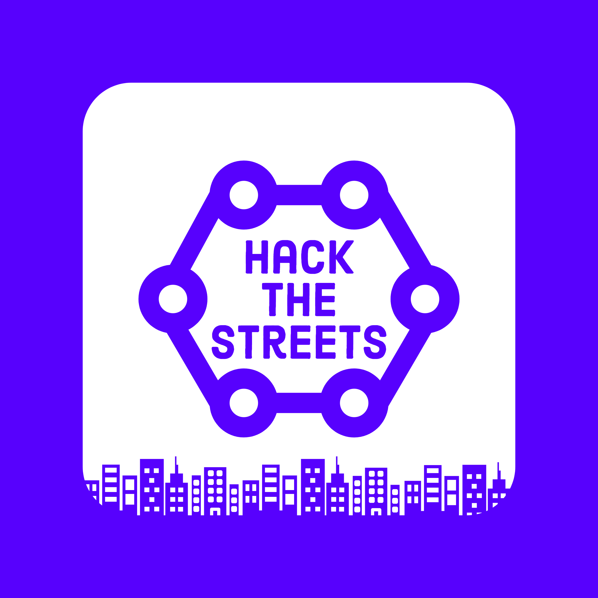

Our Mission
inGeniusX was founded on the belief that every student deserves the same opportunity to an enriching STEM education. If you introduce a child who has faced unimaginable things - poverty, death, crime, to STEM, you have the capacity to save a life. Learning the complex biological systems in ecosystems, coding your first program, understanding the laws of physics, each first step holds the potential for a bright and rising future.
The fact of the matter is, education saves lives. With inGeniusX, the goal is simple: let those in poverty, disenfranchised neighborhoods, underpriviledged areas know, that they too can be the scientist, doctor, or engineer that they aspire to be one day, regardless of the socioeconomic factors they were born into. At inGeniusX, we challenge the notion that those at the top stay at the top.
Our Intiatives
Apps for Education
Our main intiative consists of our educational app developments. With two published apps on the appstore and six more in progress, inGenius X looks to fuel the rise in the STEM by providing free, high level education to those with a lack in resources. From the basics of math and physics, our apps dive deep into the fields of artificial intelligence and organic chemistry to allow for a truly in-depth experience for those wanting to learn.
Hackathons for the underprivileged
At inGeniusX, we seek to improve access to STEM education in every way possible to every where possible, whether that be with hands on learning, or through our various mobile apps. In 2020, inGeniusX will be hosting a free of cost hackathon at the University of North America as a hands on initiative to promote STEM education to the underrepresented. With keynote tech speakers and mentors at this event, this will be an extremely enriching educational opportunity for students to explore their computer science interests.
Building schools for those in need
As another large scale initiative to promote inclusion in STEM, inGeniusX is working to fund the creation of a school in rural China that focuses on the introduction and advancement of STEM education. After a two month long volunteering venture to rural China, Rayan and Andrew saw the disastrous poverty cycle that prevents students from obtaining a high quality education. Students suffer from the lack of basic needs at their school, often having no bathrooms, leaking roofs, and no desks or chairs at all. By building a school with adequate resources, students will finally have a brighter opportunity to pursue the career waiting for them. With this pursuit, we at inGeniusX seek to make our mark internationally in order to address global inequalities in STEM.